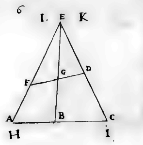

Proposition III: Third Element (Exterior Ceva & Negative Weights)¶


Proposition III · Problem III · Element III
In triangle EAC let two straight lines intersect each other at G, of which EB, drawn from vertex E, cuts the base at B, and the other, FD, meets the sides AE, CE at F and D. Let it be proposed to us to suspend heavy bodies from the angles of the same triangle: I at point C; two, L, K, at E; and a single H at A, so that K to I is as straight line \(CD\) to \(DE\); I to H as \(AB\) to \(BC\); H to L as \(EF\) to \(FA\); L K to H I as \(BG\) to \(GE\), and the two H, L to the two K, I as \(DG\) to \(GF\).
(Tab. 1, Fig. 6) Let L be any weight whatever, and let another H be found to which the first weight L has that ratio which \(AF\) has to \(FE\). Next let I be placed, to which weight H has that ratio in which \(CB\) stands to \(BA\); likewise let weight K be found, to which weight I has the ratio which \(ED\) has to \(DC\); I say that the problem has been completed.
For since FD is a certain balance-beam, at whose extremity F is the center—and therefore the weight—of the heavy bodies H, L, while at the other extremity D is the weight of the heavy bodies K, I (since their center of gravity is at point D), the center of gravity of the aforesaid weights H, L, K, I will lie on the same balance-beam FD. Similarly, since EB is a balance-beam at whose extremity E are the heavy bodies L, K, while at the other extremity B is the weight of the heavy bodies H, I, the center of gravity of the same weights L, K, H, I, existing in the same former position, will lie on the same balance-beam EB. Since therefore the center of gravity of weights L, K, H, I lies both on balance-beam FD and on BE, and that center is unique, it will lie at the common intersection G, and therefore L, K to H, I will be as straight line \(BG\) to \(GE\), and as K, I to L, H, so \(FG\) to \(GD\), which was &c.
f. 0022 · p. 5Scholium.
The aggregate of weights L, K we shall signify by the letter E; weight H by the letter A, and weight I the letter C will denote; D will express the two weights K, I, the letter F the two L, H,
and the letter B will indicate the two H, I; weight L in the analytic or algebraic manner we shall write F - A, that is F minus A; and by the same reason weight K we shall write D - C;
and all the weights L, H, I, K the letter G will signify.